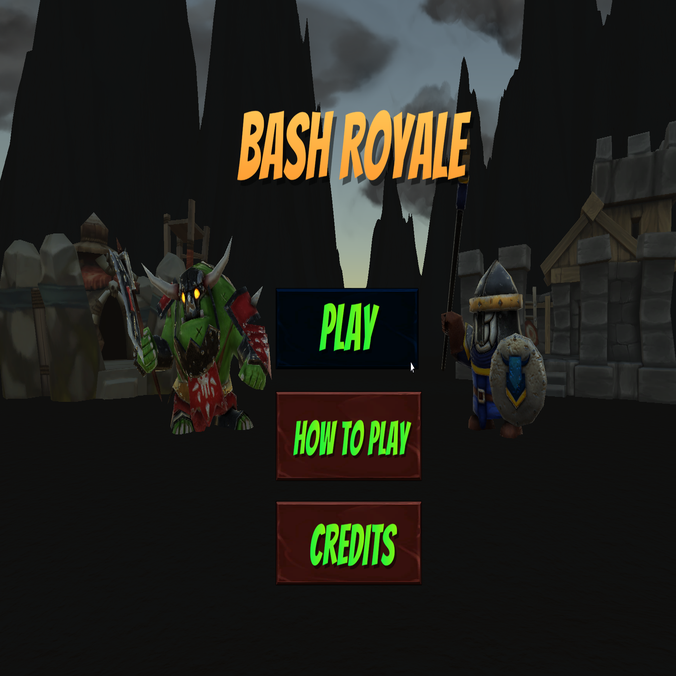
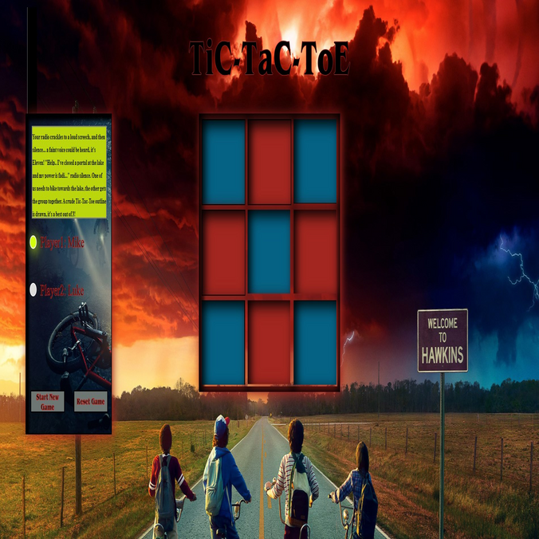
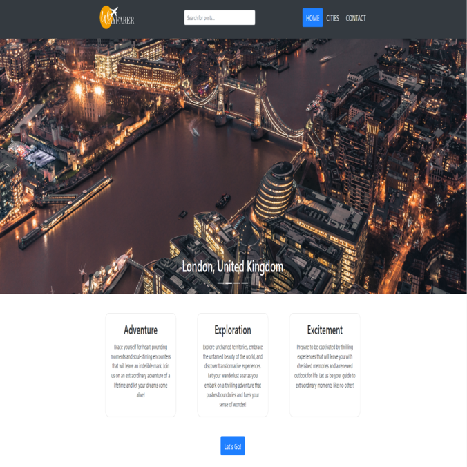

The pharmacy management system API, built with the Spring Boot framework, offers a range of functionality for efficient management of pharmacy-related operations.
With this API, pharmacies can easily integrate and streamline their operations, enabling tasks such as adding and updating medication details, retrieving medication
information, tracking prescriptions, update patient information, and processing prescription requests.

This work in progress was created for personal use in my pursuit of learning C# and the Unity Engine.
It's a tactical game where you must choose the correct units to overcome your enemy.
As your coffers fill, buy units to fight back in this clash between Humans and Orcs.
Your mission? Decimate the enemy's Great Hall.

As a beginner project in HTML, CSS, and JavaScript, I took on the challenge of creating a fun two player game from scratch.
I created a 3x3 grid with a Stranger Things backdrop. The game incorporates essential web development concepts like Grid CSS and Flexbox for effective element organization.
With player turns indicated through a custom-designed walkie-talkie interface, you can immerse yourself in the world of Stranger Things.

Wayfarer is a remarkable travel app that allows you to discover awe-inspiring destinations while connecting with fellow globetrotters. Consider it a dedicated social media
platform crafted exclusively for travel enthusiasts. Immerse yourself in captivating city posts, absorbing valuable insights and personal experiences shared by other travelers.
As a beginner in Unity, I've been creating these sample games to get a grip on game development.
Each project marks a milestone in my journey. Learning the Unity Engine is both challenging and fulfilling.
Find & Go is a fast and efficient item-finding application designed for those urgent moments when you need to quickly locate and purchase an item. Whether you're running late
for a dinner party and forgot to grab a gift or it's your kid's birthday and you need to find a last-minute present, Find & Go is here to help.